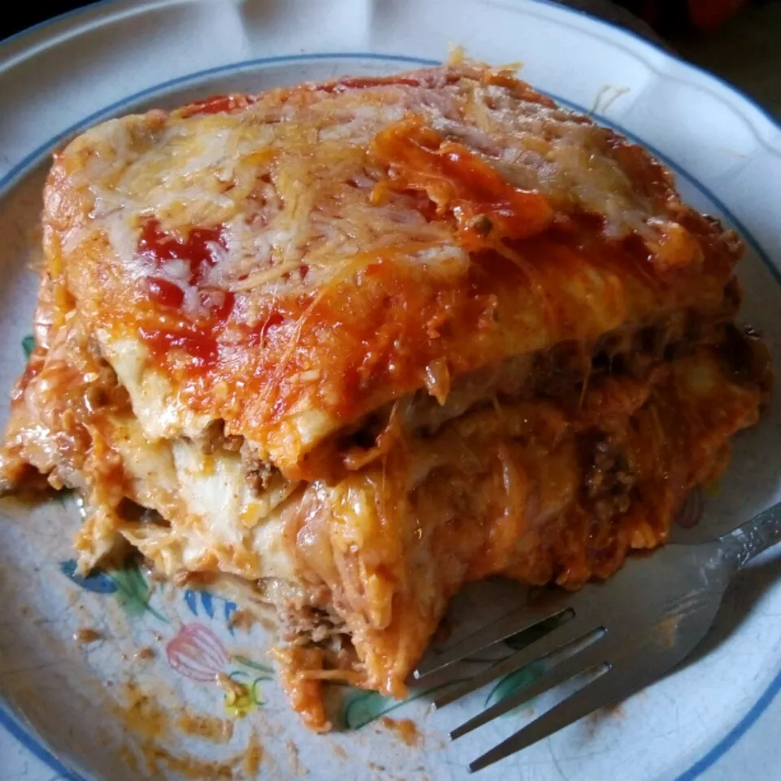

Mexican Lasagna

Description
This is a traditional dish in my family. Anyone can make it really. It is composed of traditional Mexican ingredients
layered over the top of one another in a lasagna-like fashion (hence the name) but has little similarity to lasagna, so lasagna haters have no fear!
Ingredients
- Ground Beef
- Taco Seasoning
- Flour Tortilla
- Refried Beans
- Colby-Jack Cheese
- Taco Sauce
Steps
- Cook ground beef. Add beans, cheese and taco sauce
- Layer tortillas and beef mix until pan is filled
- Bake until golden brown and bubbly